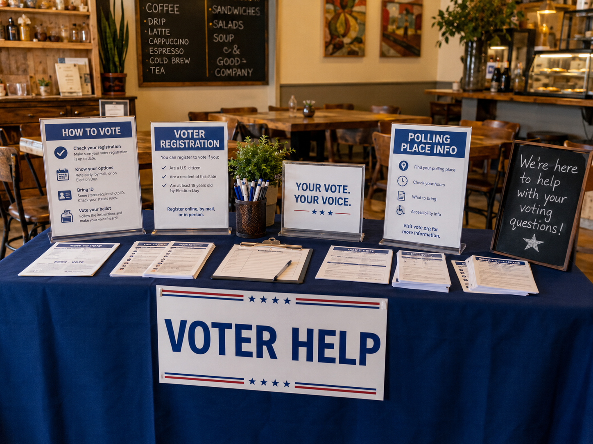
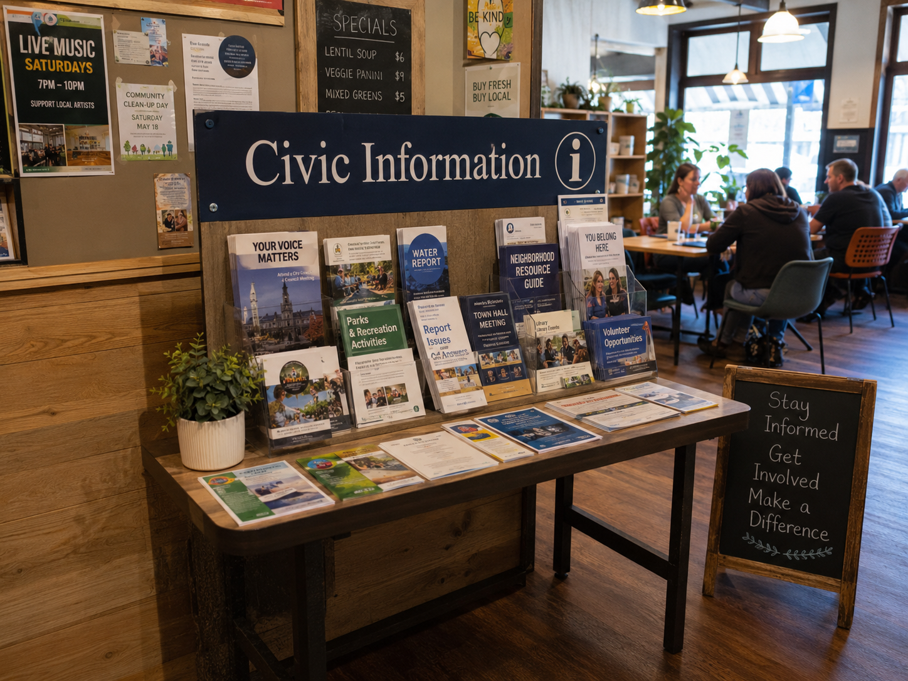
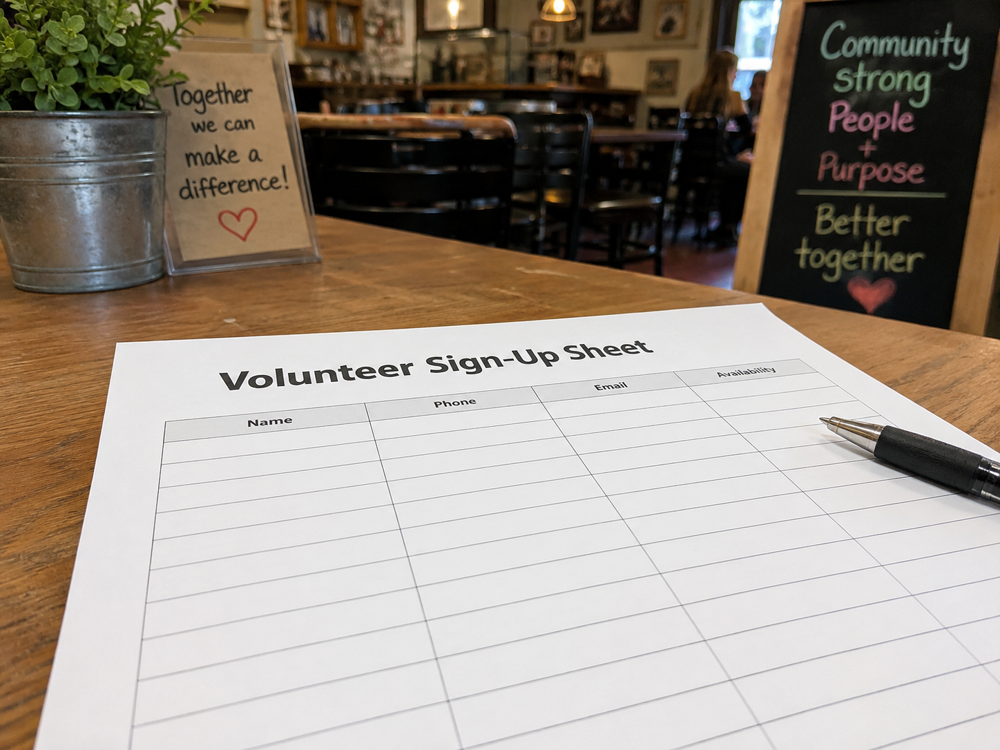

Good Neighbor Voter Table



The Good Neighbor Voter Table is a voter registration support program hosted during select weekends at the bistro. Guests can pick up basic registration information, ask volunteers where to find official forms, and learn about deadlines for upcoming elections. The point is not to tell anyone how to vote, it is just to make the process feel less confusing for people who already want to participate.